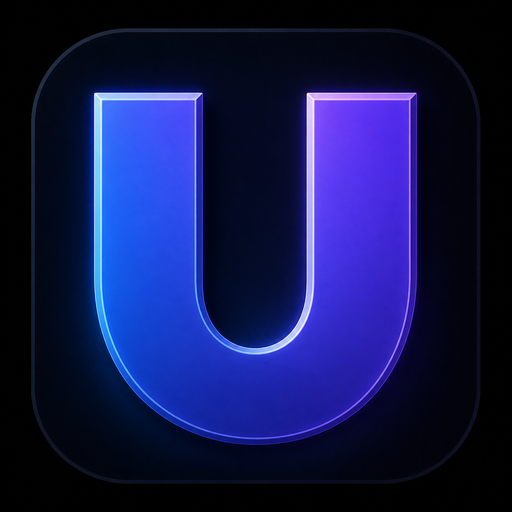

Guided creation
Live loading progress ends with a copyable Server Code when your world is online.

unturnedDSUnturned Dedicated Server DownloadBuild, customize, protect, and launch a dedicated server without wrestling with config files. unturnedDS handles the setup while you stay in control.
No command-line scavenger hunt. Choose your rules, map, multipliers, vehicles, and password from a clear guided interface.
Live loading progress ends with a copyable Server Code when your world is online.
Back up worlds through your existing OneDrive, Dropbox, or Drive folder.
Change maps, mechanics, multipliers, and passwords after creation.
Finds Steam and Unturned locally. Your Steam password stays with Steam.
Download unturnedDS and create your first dedicated server.